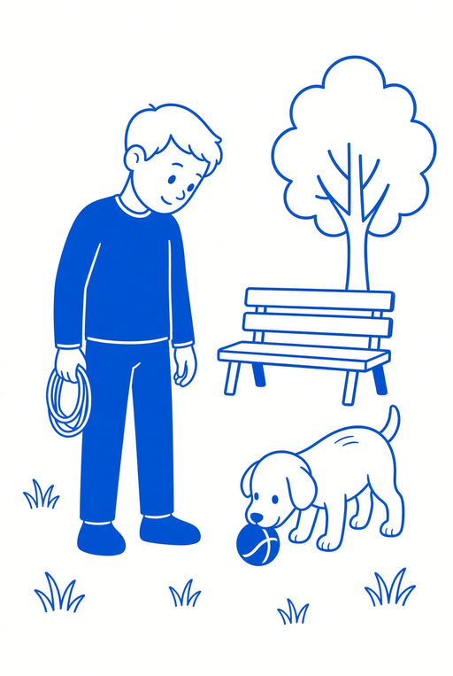
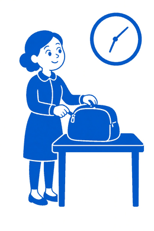

letten op
to pay attention to, to keep an eye on
drawnin the game
- Scene
- a woman on a bicycle waits at the mouth of a side street, one foot flat on the ground, both hands squeezing the brakes. Her head is turned fully sideways, chin over her shoulder, eyes following a car and a van that cross close in front of her. Her front wheel stays behind the kerb line. The sharply turned head aimed at the passing car is the clearest mark.
- Must read
- watching the traffic before moving: stopped, alert, eyes on the vehicles.
- Avoid
- jumping back from a car or a raised warning hand (uitkijken voor, the contrast partner); an adult holding a child by the hand at the kerb (passen op kind); an arm stuck out to signal a turn; a traffic light or road sign with any symbol or number; a phone in the hand.
- Pair / note
- The existing scene on this card shows a milk pan, with a note proposing to rename the noun to melk. That would duplicate letten-op-pannen in the same group, and the id and learner sentence still say verkeer. I wrote traffic here and moved the milk-foam cue to letten-op-pannen. Judgement: letten op het verkeer and uitkijken voor are near-synonyms; the only visible difference is calm watching against a warning or recoil.
- Example
- Ik let op het verkeer.
I pay attention to the traffic. - Build
- Ik let op het verkeer
- Build
- Zij let op het verkeer
- Check question
- Kijkt de persoon goed naar het verkeer? Ja
- Alt text
- Een vrouw staat stil met haar fiets bij de stoeprand en kijkt opzij naar een auto die vlak langs haar rijdt.
letten-op-verkeer.png · rij 44 · herkomst Docs/prepositions-art.md:361 (git)

letten op
drawnin the game
- Scene
- a man stands still on park grass, an unclipped leash folded in one hand, the other hand on his hip. His body and face are turned toward his dog, which noses at a ball a few steps away with its back to him; his head is tilted down, eyes on the dog. A bench and one tree behind. His fixed gaze across the gap to the loose dog is the clearest mark.
- Must read
- keeping an eye on the dog: watching it from a short distance, not touching it.
- Avoid
- the leash clipped on and the two walking (reads as de hond uitlaten); a dog out of sight and a hand cupped at the mouth (zoeken naar hond); leaning back from a barking dog (bang voor hond, uitkijken voor); arms round the dog (houden van hond); a bowl or brush (zorgen voor hond); throwing the ball.
- Pair / note
- Judgement: for an animal, letten op and passen op show the same picture. A Dutch speaker may say either.
- Example
- Hij let op zijn hond.
He keeps an eye on his dog. - Build
- Hij let op zijn hond
- Build
- Ik let op mijn hond
- Check question
- Zit de hond aan de riem? Nee
- Alt text
- Een man staat in een park met een losse riem in zijn hand en kijkt naar zijn hond, die een paar stappen verder aan een bal snuffelt.
letten-op-hond.png · rij 127 · herkomst Docs/prepositions-art-a0-a2.md:616 (git)

letten op
drawnredraw
- Scene
- a woman stands at a table with her coat on, one hand pulling the zip of a packed bag shut, the other holding the bag steady. Her head is turned up and away from the bag to a large round wall clock with two hands and no numerals, eyebrows raised. The head turned up to the clock while the hands keep working is the clearest mark.
- Must read
- keeping an eye on the time while doing something else.
- Avoid
- numerals or marks on the clock face; a wristwatch at a bus stop (wachten op bus); tapping a bare wrist at another person (vragen naar de tijd); running with folders (haast hebben); a child anywhere in the picture (passen op kind, the frame this level contrasts with); staring at the clock with idle hands (wachten op).
- Pair / note
- Renamed from letten-op-kind to letten-op-de-tijd (review 20 Nov 2026): the id said child, the example says time. The current drawing shows her zipping a bag with her eyes on the bag, so it does not teach letten op; redraw with her eyes on the clock while her hands keep working. The check question asks about the clock, which the redraw must show. Not in the game: the importer skips cards with a second class.
- Example
- Zij let op de tijd.
She keeps an eye on the time. - Build
- Zij let op de tijd
- Build
- Ik let op de tijd
- Check question
- Kijkt de vrouw naar de klok? Ja
- Alt text
- Een vrouw met haar jas aan ritst een tas dicht; aan de muur achter haar hangt een grote klok.
weak pictureA parent watching a child at a playground is passen op kind, the frame this level is meant to contrast with.
letten-op-de-tijd: person glancing at a wrist while packing a bag.
letten-op-de-tijd.png · rij 129 · herkomst Docs/prepositions-art-a0-a2.md:618 (git)

letten op
drawnin the game
- Scene
- a man stands at a stove, bent forward from the waist with both hands clasped behind his back, his face level with a saucepan and his eyes fixed on it. In the pan a dome of milk foam swells just above the rim, not yet spilling. A spoon lies on the counter out of reach. The hands behind the back and the stare at the rising foam are the clearest marks.
- Must read
- watching the pan closely without touching it.
- Avoid
- a spoon in the hand or a hand on the pan handle (bezig zijn met koken, the frame the verdict says it collides with); milk already running down the side or smoke (too late, reads as aanbranden); bending to smell with eyes closed (ruiken aan); a road or a car (letten op verkeer); a child at the stove.
- Pair / note
- The verdict says a held spoon cannot be told from cooking at 64 px. The spoon is now out of the hands and the hands are behind the back, which is visible at that size.
- Example
- Hij let op de pan met melk.
He keeps an eye on the pan of milk. - Build
- Hij let op de pan met melk
- Build
- Ik let op de pan met melk
- Check question
- Roert de man in de pan? Nee
- Alt text
- Een man staat voorovergebogen bij het fornuis met zijn handen op zijn rug en kijkt strak naar een pan waarin melkschuim omhoogkomt.
letten-op-pannen.png · rij 128 · herkomst Docs/prepositions-art-a0-a2.md:617 (git)